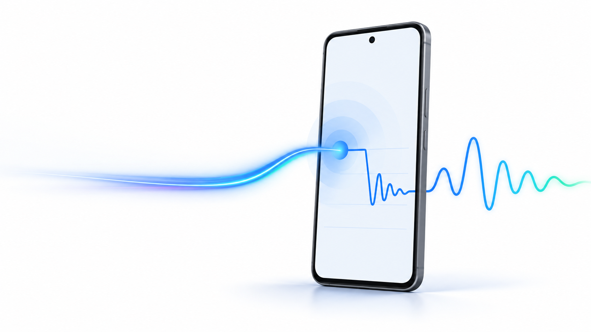
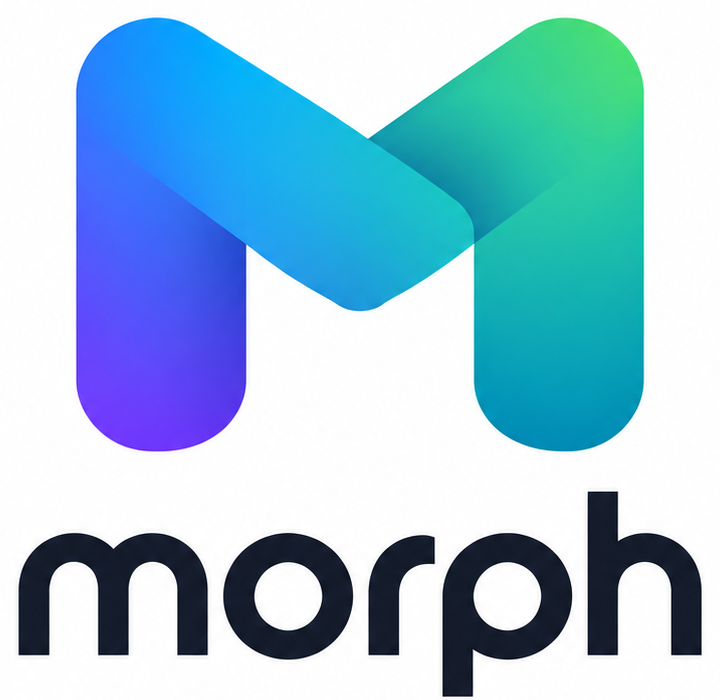
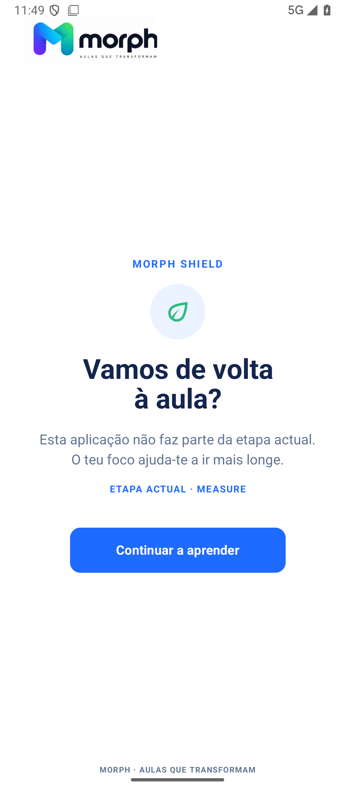
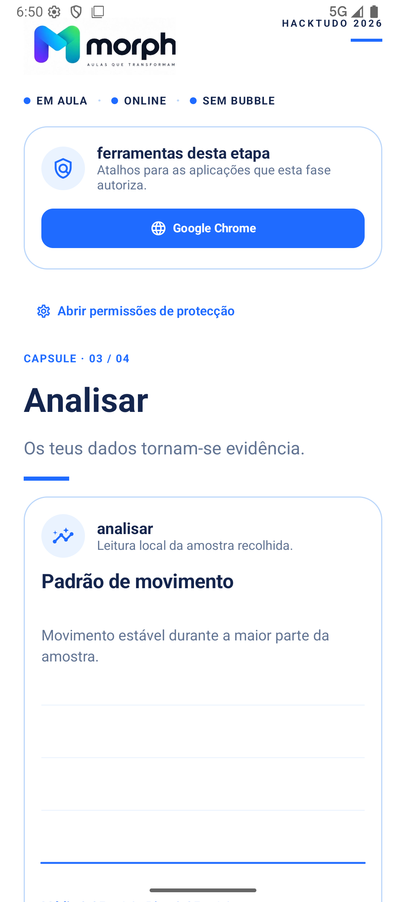
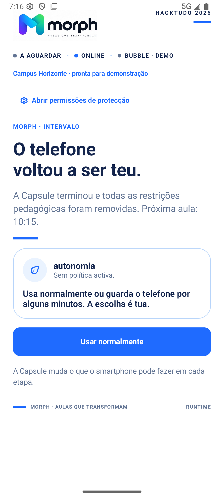

A aula precisa das aplicações certas em cada momento.
As aplicações mudam porque a tarefa da aula mudou.


O professor inicia e avança as fases.
A aula continua se a Internet falhar.
No intervalo, o telemóvel volta ao aluno.
O Sentinel regista eventos técnicos da sessão. Não lê mensagens nem fotografias.
